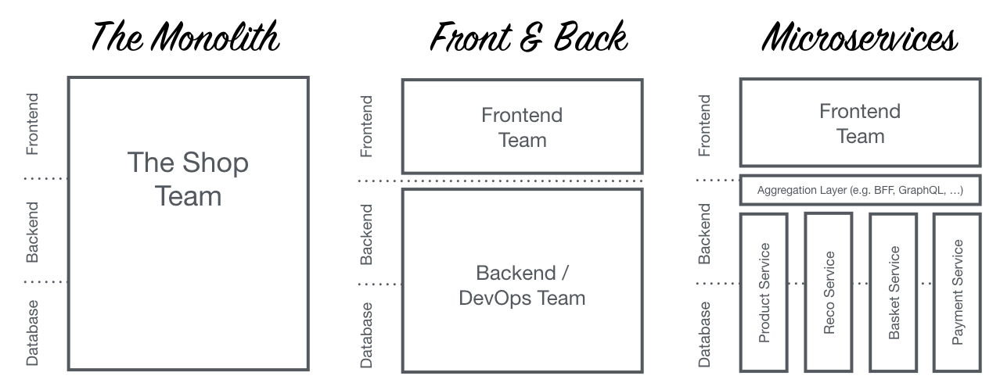
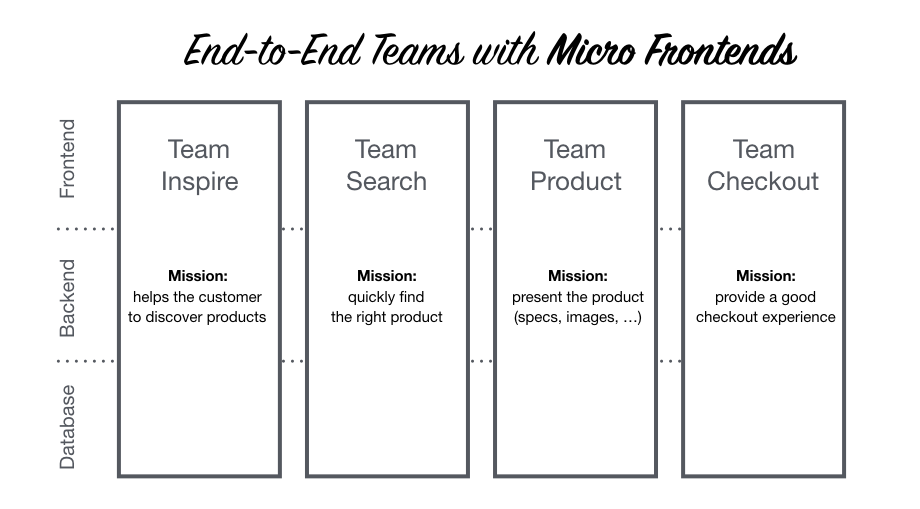

Micro Frontends
Arquiteturas comuns

Times verticais
😍
Porque usar MF?
Agnóstico à tecnologia
Cada time pode desenvolver com a tecnologia que mais domina ou que melhor atende sua área de negócio.

Desenvolvimento desacoplado
Já que cada time tem sua própria tecnologia, repositório, etc., conflitos e merges são reduzidos drasticamente.
Entregas desacopladas
O carrinho de compras ficou pronto? Faça o deploy sem ter que esperar por ninguém. Interdependências também são reduzidas.
Problema desacoplado
Eis que surge um bug em produção.
Fique tranquilo*, os outros MFs continuarão funcionando. Sua aplicação não é mais monolítica.
* resolva o bug
Você precisará de um
Design System
Acredite, isso é muito bom.
Quando não usar?
Não use em times pequenos, ou projetos de curta duração, pois o aparato para sustentar essa arquitetura é grande.
O que eu preciso para começar a usar MFs?
Escolha o tipo de arquitetura que resolverá seu problema. Algumas implementações são mais simples que outras.
Server-side renderer
<nav>
<a href="/rota1">Rota 1</a>
<a href="/rota2">Rota 2</a>
<a href="/rota3">Rota 3</a>
</nav>
<div class="rota1>
<!-- include src="http://front-1.softdesign.com.br:8081" -->
</div>
<div class="rota2>
<!-- include src="http://front-2.softdesign.com.br:8081" -->
</div>
<div class="rota3>
<!-- include src="http://front-3.softdesign.com.br:8081" -->
</div>
<nav>
<!-- include src="http://menu-fragment.softdesign.com.br:8081" -->
</nav>
<div class="rota1>
<!-- include src="http://front-1.softdesign.com.br:8081" -->
</div>
<div class="rota2>
<!-- include src="http://front-2.softdesign.com.br:8081" -->
</div>
<div class="rota3>
<!-- include src="http://front-3.softdesign.com.br:8081" -->
</div>
Vantagem
• Implementação super simples
Desvantagem
• Muitos conflitos de libs
Dúvidas?
Single SPA
import {declareChildApplication, start} from 'single-spa';
import 'babel-polyfill';
const dca = declareChildApplication;
dca('navbar', () => import('./navbar/navbar.app.js'), () => true);
dca('home', () => import('./home/home.app.js'), () => location.pathname === "" || location.pathname === "/");
dca('react', () => import('./react/react.app.js'), pathPrefix('/react'));
dca('angular', () => import('./angular/angular.app.js'), pathPrefix('/angular'));
dca('angularjs', () => import('./angularjs/angularjs.app.js'), pathPrefix('/angularjs'));
dca('vue', () => import('src/vue/vue.app.js'), pathPrefix('/vue'));
dca('cyclejs', () => import('http://url-privada/entry.js'), pathPrefix('/cycle'));
start();
Projeto: https://github.com/CanopyTax/single-spa
Demo: https://single-spa.surge.sh/
Fonte Demo: https://github.com/CanopyTax/single-spa-examples
./react/react.app.js
import React from 'react';
import ReactDOM from 'react-dom';
import singleSpaReact from 'single-spa-react';
import rootComponent from './root.component.js';
const reactLifecycles = singleSpaReact({
React,
ReactDOM,
rootComponent,
domElementGetter: () => document.getElementById('react-app')
});
export const bootstrap = [reactLifecycles.bootstrap];
export const mount = [reactLifecycles.mount];
export const unmount = [reactLifecycles.unmount];
./angular/angular.app.js
import 'zone.js';
import 'reflect-metadata';
import {platformBrowserDynamic} from '@angular/platform-browser-dynamic';
import singleSpaAngular from 'single-spa-angular';
import mainModule from './main-module.ts';
const ngLifecycles = singleSpaAngular({
mainModule,
angularPlatform: platformBrowserDynamic(),
template: `Vantagem
• Tudo vira uma single page que pode inclusive ser lazy
Desvantagem
• Na pratica, nem tudo funciona. Principalemente com Angular 6+
Dúvidas?
IFrames 😈
Quadros por toda parte e comunicação via window.postMessage.
Vantagem
• Super simples de implementar, inclusive a aplicação host pode ser Angular, React, etc.
Desvantagem
• Ainda é um IFrame 🤮, acessibilidade, indexação, etc.
Dúvidas?
Múltiplos single-pages
Cada url carrega uma aplicação completa. Tudo é orquestrado com um gateway, nginx, CDN, etc.
Vantagem
• Funciona com todas tecnologias e é zero conflito
Desvantagem
• Reload entre páginas, é um dos mais dificeis de implementar
Dúvidas?
Web components & shadow DOM
Cada fragmento de tela, ou até mesmo uma página inteira, é um web component que implementa as interfaces de comunicação padrão
Vantagem
• Em geral precisará usar js puro para ficar "leve"
Desvantagem
• IE nunca nem viu!
Dúvidas?
Storybook
Monorepo / lerna
Snapshot test
<meu-componente>
<label>Título</label>
<button>Submit</button>
</meu-componente>
NPM packs
Eras isso!
Vlw flw!